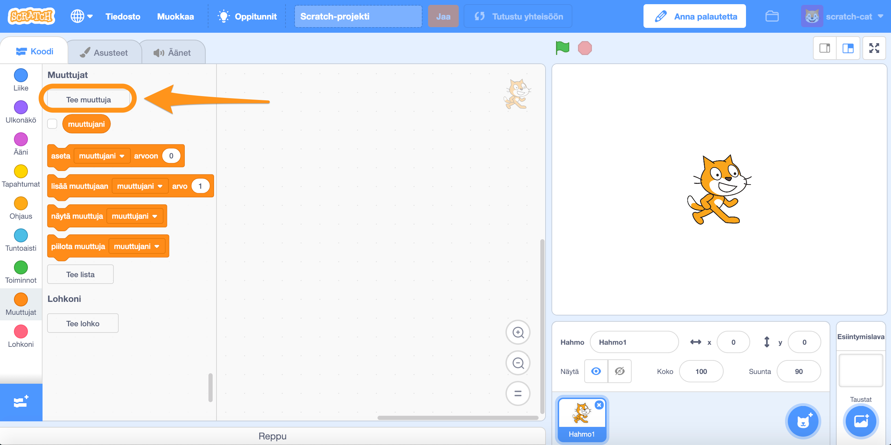
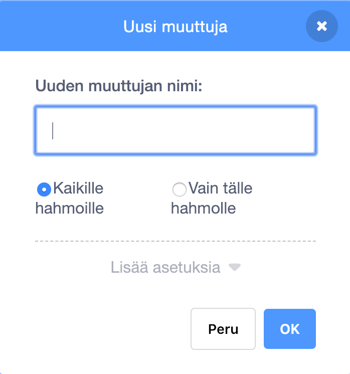
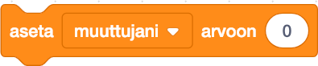
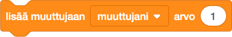

Muuttuja
Muuttuja on säilytyspaikka arvolle tietokoneen muistissa. Scratchissä muuttuja on soikion muotoinen palikka, jonka voi itse nimetä. On olemassa sekä paikallisia (lokaaleja) että yleisiä (globaaleja) muuttujia. Paikallista muuttujaa käytetään vain yhdessä hahmossa. Yleistä muuttujaa voi käyttää kaikissa hahmoissa.
Esimerkkejä muuttujista Scratchissä
Mene Muuttujat-valikkoon ja napauta "Tee muuttuja"-kuvaketta.
Anna muuttujalle nimi ja valitse onko se vain tälle hahmolle vai kaikille hahmoille.
Tämä palikka kertoo muuttujan arvon.
Tämä palikka asettaa muuttujalle tietyn arvon.
Tämä palikka muuttaa muuttujan arvoa tietyn määrän.
